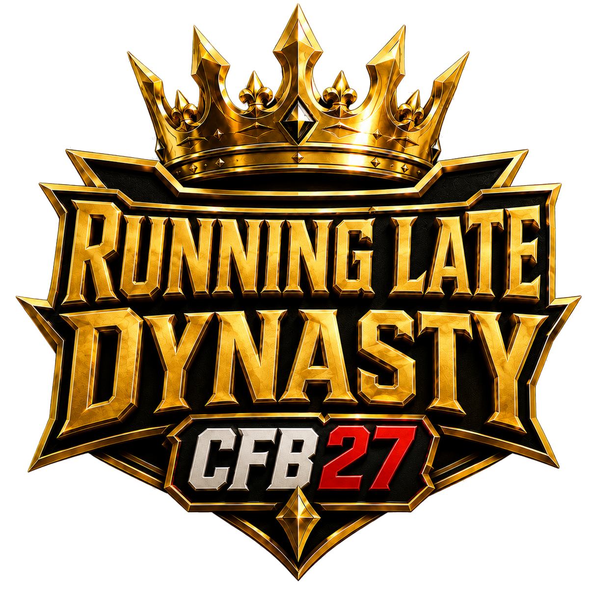

RLD GameDay DeskLAUNCH WEEK
CFB 27 Dynasty Command Center
Fast signals up top, deeper league history below. The D1SN magazine style stays alive, and the front page now reads like a live sports dashboard.
Fast signals up top, deeper league history below. The D1SN magazine style stays alive, and the front page now reads like a live sports dashboard.

Preseason signals for advance pace, scheduling, streams, rewards, and Discord activity.
Quick-glance game cards pulled from the schedule data.
Storylines for weekly issue writeups, GOTW polls, and league posts.
Core preseason settings for the CFB 27 site.
Fast public readout for activity, completions, streams, rewards, reviews, and team openings.
Current user team board by conference.
Programs with the heaviest projected user-game workload.
The league history arc stays on the front page.